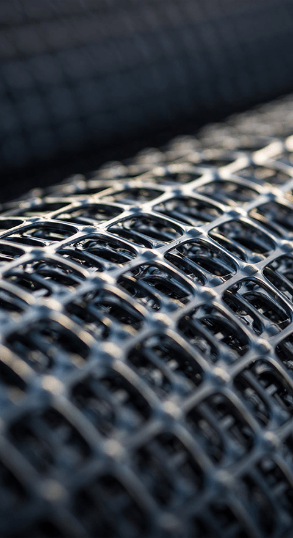
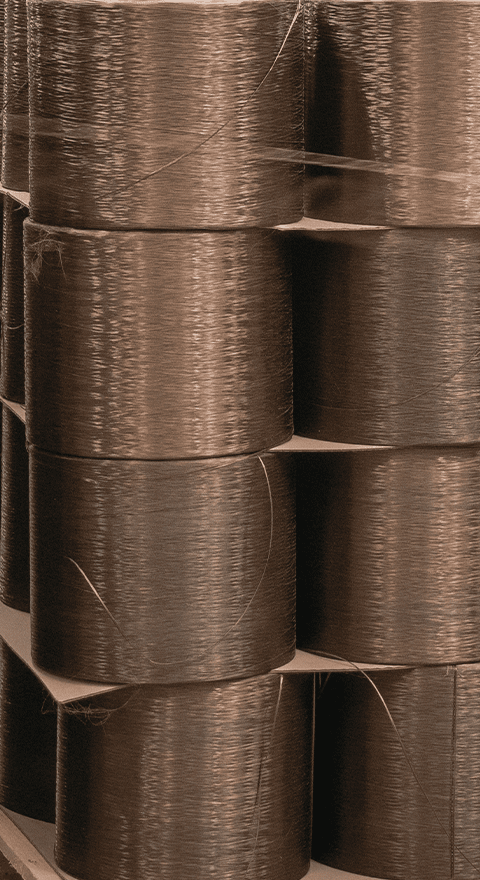

When you enter into any new area of science, you almost always find yourself with a baffling new language of technical terms to learn before you can converse with the experts. This is certainly true in astronomy both in terms of terms that refer to the cosmos and terms that describe the tools of the trade, the most prevalent being the telescope. So to get us off of first base, let’s define some of the key terms that pertain to telescopes to help you be able to talk to them more intelligently.
The first area of specialization in telescopes has to do with the types of telescopes people use. The three designs of telescopes that most people use are the Refractor, the Reflector and the Schmidt Cassegrain telescope. The refractor telescope uses a convex lens to focus the light on the eyepiece. The reflector telescope has a concave lens which means it bends in. It uses mirrors to focus the image that you eventually see. The Schmidt Cassegrain telescope uses an involved system of mirrors to capture the image you want to see. A binocular telescope uses a set of telescopes mounted and synchronized so your view of the sky is 3-D.
Beyond the basic types, other terms refer to parts of the telescope or to the science behind how telescopes work. Collimation is a term for how well tuned the telescope is to give you a good clear image of what you are looking at. You want your telescope to have good collimation so you are not getting a false image of the celestial body. e there to assist you with a superior viewing session and to keep your expensive telescope safe from a fall.
- 

- 